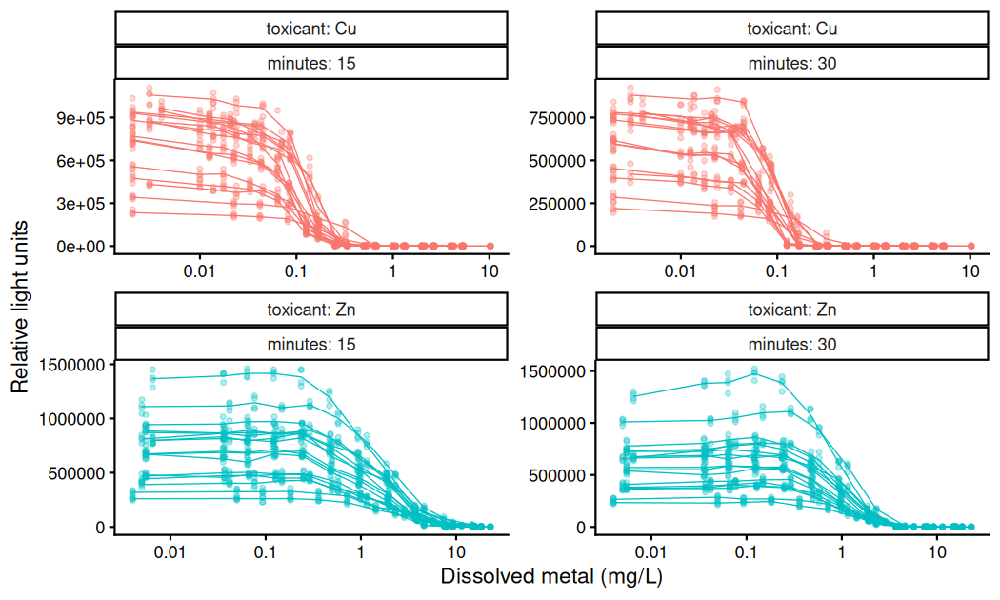
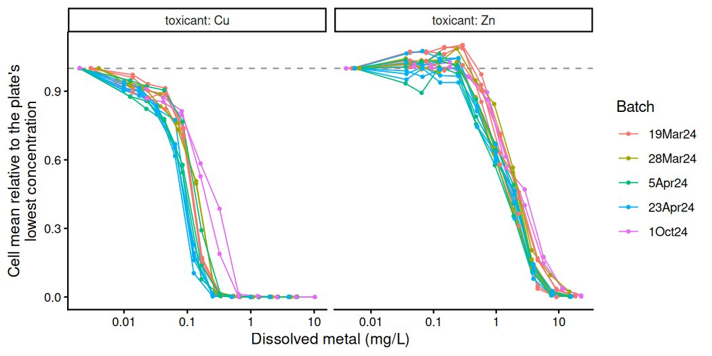
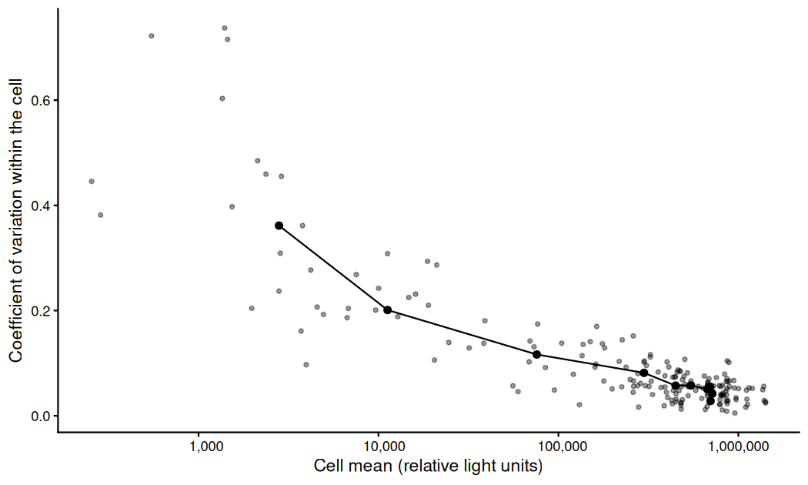
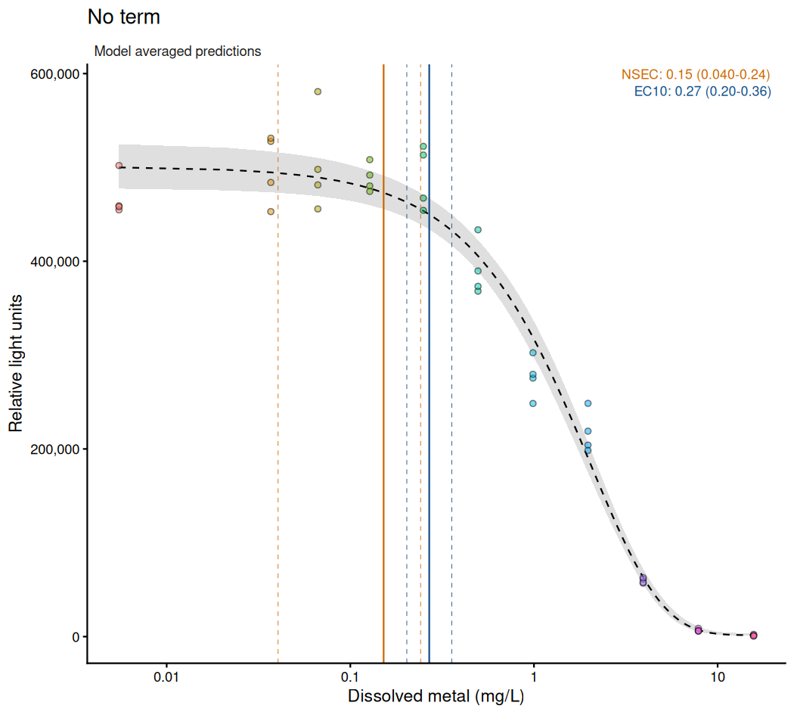
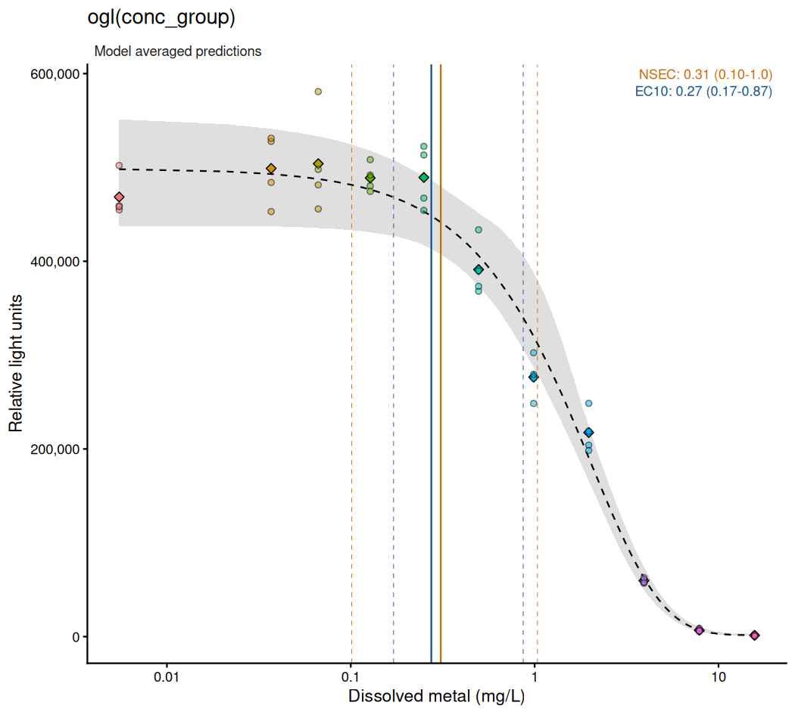
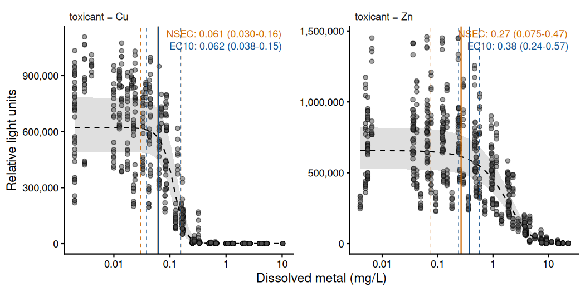
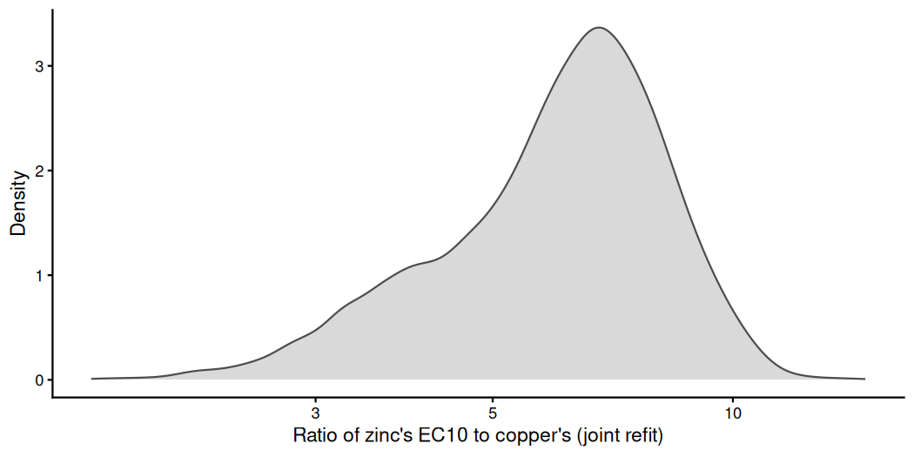

Overview
Concentration-response experiments are rarely a single series. Replicates are often held in shared vessels (e.g. tanks, vials or chambers), and a test may be repeated on several plates, in several batches, or for several chemicals. Ignoring that structure treats observations as independent when they are not, and may change both an estimate and its uncertainty.
bayesnec provides three routes for such data: a
group-level term in the model formula, a separate model set for each
level fitted by bnec_group(), and a joint refit of those
separate fits by bnec_joint(). Which route applies depends
on the kind of grouping (see the table under Types of
grouping), and here we apply all three to the lum31
bioluminescence data of Luter et al.
(2025).
Each plate of lum31 spans more than three orders of
magnitude of concentration, so each figure is drawn on a log axis.
autoplot() returns the predictor on the scale it was
recorded on, having inverted the log() written inside
crf(), so the axis is set by transforming the scale and not
the values or the breaks (see The scale of the predictor in Single
model usage). rlu_axes names and formats the axes of
the autoplot() figures.
log_x <- scale_x_continuous(transform = "log10",
labels = function(x) signif(x, 2))
rlu_axes <- list(
labs(x = "Dissolved metal (mg/L)", y = "Relative light units"),
scale_y_continuous(labels = function(y) format(y, big.mark = ",",
scientific = FALSE))
)Types of grouping
The route for a grouping follows from two of its properties: whether each level spans the concentration series, and whether the levels are a sample from a larger set (e.g. plates, which could have been any plates) or treatments chosen by the investigator (e.g. copper and zinc).
| Grouping | Spans the series | Levels | Route | In this vignette |
|---|---|---|---|---|
| Replicate vessels at one concentration (e.g. tanks, chambers, or the wells at one concentration on a plate) | No | A sample of possible vessels |
ogl() on the vessel |
ogl(conc_group) |
| Repeated runs of the whole test (e.g. plates, batches, genotypes drawn from a population) | Yes | A sample of possible runs |
ogl(), (par \| group) or
pgl() on the run |
pgl(plate) |
| Treatments of interest (e.g. chemicals, species, exposure times) | Yes | Fixed, chosen by the investigator |
bnec_group(), a model set per level |
toxicant |
| Treatments to be contrasted in one posterior, or sharing a group-level term | Yes | Fixed |
bnec_joint() on a bnec_group() fit |
copper and zinc with a shared (ec50 \| batch)
|
A vessel at one concentration has no curve of its own, because it is
observed at a single concentration, so it admits only a displacement,
and ogl() is the term for it. A grouping whose levels each
span the series can also differ in shape. (par | group)
places a deviation on one named parameter where there is a hypothesis
about which feature of the curve varies (for example,
(nec | group) for a threshold that differs between levels),
and pgl() places one on each parameter where there is no
such hypothesis. Treatments of interest are not a sample from a larger
population, so shrinking them towards a common curve would answer a
different question, and their functional forms may also differ. The
routes can be combined (e.g. the copper and zinc fits below include
group-level terms within each level of a bnec_group()
call). The figure below shows what each term does to a curve.
![The effect of each group-level term on a nec4param curve, drawn from chosen parameter values without fitting. The dashed black line is the population curve and each colour one level of the grouping. (a) ogl() scales each level's curve by one factor, with the shape shared. (b) (nec | group) shifts the threshold along the axis and shares the rest of the curve. (c) pgl() gives every parameter a deviation, so each curve differs a little in each respect. (d) For a grouping within a concentration, each level (grey point) is one mean at its own concentration, displaced from the curve, with no curve of its own. On an ECx equation, (ec50 | group) acts as (nec | group) does in (b).](vignette-fig-fig-grouping-schematic-1.png)
The effect of each group-level term on a nec4param curve, drawn from chosen parameter values without fitting. The dashed black line is the population curve and each colour one level of the grouping. (a) ogl() scales each level’s curve by one factor, with the shape shared. (b) (nec | group) shifts the threshold along the axis and shares the rest of the curve. (c) pgl() gives every parameter a deviation, so each curve differs a little in each respect. (d) For a grouping within a concentration, each level (grey point) is one mean at its own concentration, displaced from the curve, with no curve of its own. On an ECx equation, (ec50 | group) acts as (nec | group) does in (b).
Group-level term syntax
ogl(), (par | group) and pgl()
are written into a bayesnecformula, and
make_brmsformula() (the function bnec() uses
to build the non-linear brms formula it fits) shows what
each term becomes. We use nec4param, which includes each
parameter a term can be placed on (top, bot,
beta and nec). make_brmsformula()
needs only the column names of the data, so we use a small synthetic
data frame with a proportion as the response and a Beta
family. The identity link is stated because a family object held in a
variable keeps its own link, and Beta() defaults to
logit.
set.seed(228)
gdat <- data.frame(
conc = rep(c(0.1, 0.3, 1, 3, 10, 30), each = 4),
response = rep(c(0.90, 0.88, 0.70, 0.40, 0.15, 0.05), each = 4) +
rnorm(24, 0, 0.02),
group = factor(rep(letters[1:4], times = 6))
)
beta_fam <- Beta(link = "identity")
brms_form <- function(formula, family = beta_fam) {
make_brmsformula(bayesnecformula(formula), data = gdat,
family = family)[["nec4param"]]
}ogl() gives each level one deviation applied to the
whole fitted mean, so the curve is displaced and its shape is shared
(the analogue of a random intercept in a linear model).
brms_form(response ~ crf(conc, "nec4param") + ogl(group))
#> response ~ bnecmu * exp(ogl)/(1 - bnecmu + bnecmu * exp(ogl))
#> bnecmu ~ bot + (top - bot) * exp(-exp(beta) * (conc - nec) * step(conc - nec))
#> bot ~ 1
#> top ~ 1
#> beta ~ 1
#> nec ~ 1
#> ogl ~ 1 + (1 | group)The equation appears intact as bnecmu, and the deviation
ogl is applied through
bnecmu * exp(ogl) / (1 - bnecmu + bnecmu * exp(ogl)), which
adds it to the log-odds of the mean. How the deviation is applied
depends on the family: it is added to the mean under
gaussian(), multiplies the mean by exp(ogl)
under Gamma(link = "identity"), and is added on the
log-odds under Beta. Its standard deviation (SD) is
therefore read on that scale and not on the response scale (e.g. under
the Gamma family used for lum31, an SD of 0.1
corresponds to a departure of about 10 per cent). The Priors for
group-level parameters section of the Priors
vignette lists which deviations are applied in this way.
(par | group) places a deviation on one named parameter,
and the other parameters stay population-level
(e.g. (nec | group) adds + (1 | group) to
nec only). However, the parameters differ between equations
(e.g. bot is a parameter of nec4param but not
of nec3param). Where the named parameter is absent, the
term is dropped from that equation, and an equation left with no term on
the grouping variable is excluded from the set, because it would
otherwise be fitted as one curve pooled over the levels that the other
equations separate. bnec() prints a message naming an
excluded equation before fitting, and check_formula() with
run_par_checks = TRUE shows the dropped terms without
fitting anything:
invisible(check_formula(
bayesnecformula(response ~ crf(conc, c("nec3param", "nec4param")) +
(bot | group)),
data = gdat, run_par_checks = TRUE
))
#> Performing single parameter checks on all models...
#> The parameter(s) "bot" not valid parameters in nec3param. If this was a mistake, check ?models and ?show_params, otherwise ignore.The message names nec3param as the equation without a
bot parameter, and (bot | group) is the only
term on group in this formula, so bnec() would
exclude nec3param and fit nec4param only.
pgl() places a deviation on each parameter of the
equation, so each level has its own curve, shrunk towards a common one,
and the parameter names do not have to be known in advance.
brms_form(response ~ crf(conc, "nec4param") + pgl(group))
#> response ~ bnecbot + (bnectop - bnecbot) * exp(-exp(beta) * (conc - nec) * step(conc - nec))
#> bot ~ 1
#> top ~ 1
#> beta ~ 1 + (1 | group)
#> nec ~ 1 + (1 | group)
#> botgl ~ 0 + (1 | group)
#> bnecbot ~ bot * exp(botgl)/(1 - bot + bot * exp(botgl))
#> topgl ~ 0 + (1 | group)
#> bnectop ~ top * exp(topgl)/(1 - top + top * exp(topgl))beta and nec take their deviations
additively, and top and bot, which the
Beta family bounds, take theirs through topgl
and botgl in the transformed form shown above for
ogl. pgl() therefore estimates one SD per
parameter (four for nec4param) from however many levels the
grouping has. Five levels is the conventional minimum for estimating one
SD, so pgl() is likely to need more levels than the other
terms to be well determined.
The bioluminescence data
lum31 contains acute copper and zinc toxicity tests on
the tropical marine bacterium Vibrio azureus (strain Lum-31),
reported by Luter et al. (2025) at https://doi.org/10.1002/tox.70003. Light output falls as
the cells are inhibited, so the response is the luminescence reading
itself (in relative light units). Copper and zinc were tested repeatedly
as reference toxicants to show that the assay is repeatable, which gives
the data replication at four nested scales (table below; see also
?lum31).
data(lum31)| Scale | Column | Unit | One plate | Zinc at 15 minutes |
|---|---|---|---|---|
| Well | well |
One reading of one well | 44 | 748 |
| Cell | conc_group |
The four wells at one concentration on one plate | 11 | 187 |
| Plate | plate |
One complete test of 11 concentrations | 1 | 17 |
| Batch | batch |
The plates dosed and read on one date | 1 | 5 |
Copper has 16 plates (176 cells and 704 wells) in the five batches, and each well was read again at 30 minutes. We call each combination of toxicant and exposure time an arm. Concentrations are measured dissolved metal, and each batch was dosed separately, so a given dilution step is at a slightly different concentration in each batch.
ggplot(lum31, aes(x = conc, y = rlu_cens, group = plate,
colour = toxicant)) +
geom_point(alpha = 0.3, size = 1) +
stat_summary(fun = mean, geom = "line", linewidth = 0.3) +
facet_wrap(~toxicant + minutes, scales = "free", labeller = label_both) +
log_x +
# The facet strip names the toxicant, so a legend would repeat it.
scale_colour_hue(guide = "none") +
theme_classic() +
labs(x = "Dissolved metal (mg/L)", y = "Relative light units")
plot of chunk fig-lum31-raw
In each arm, luminescence stays near its control level over the lower part of the series and then falls across about a tenfold range of concentration. Zinc is less potent than copper by about an order of magnitude, and both metals are more potent at 30 minutes. At the highest concentrations the readings reach the instrument’s floor. The plates of one arm differ by a factor of four to five at the control, which is likely to reflect mainly the gain of the plate reader, set separately for each read.
Dividing each plate’s cell means by its mean at the lowest
concentration divides out that gain, so that the positions of the
plates’ curves can be compared. conc_rank numbers the
concentrations of a plate from lowest to highest (read from the suffix
of conc_group):
zn_cu_15 <- droplevels(subset(lum31, minutes == 15)) |>
mutate(conc_rank = factor(as.integer(sub(".*-c", "",
as.character(conc_group)))))
zn_cu_15 |>
group_by(toxicant, batch, plate, conc_rank) |>
summarise(conc = mean(conc), cell_mean = mean(rlu_cens),
.groups = "drop_last") |>
mutate(relative = cell_mean / cell_mean[conc_rank == "1"]) |>
ggplot(aes(x = conc, y = relative, group = plate, colour = batch)) +
geom_hline(yintercept = 1, linetype = 2, colour = "grey60") +
geom_line(linewidth = 0.4) +
geom_point(size = 0.8) +
facet_wrap(~toxicant, scales = "free_x", labeller = label_both) +
log_x +
theme_classic() +
labs(x = "Dissolved metal (mg/L)",
y = "Cell mean relative to the plate's\nlowest concentration",
colour = "Batch")
plot of chunk fig-plate-relative
For zinc, 12 or 13 of the 17 plates have a relative mean above 1 at each of the second to fifth concentrations (medians of 1.01 to 1.03), so luminescence appears to rise above the control before it falls (hormesis), whereas no copper plate does. Once the gain is divided out, the plates of one metal still appear to differ in where their curves fall. For example, the two 1Oct24 copper plates fall at higher concentrations than every plate of the other batches, and the two 1Oct24 zinc plates fall above most of them.
We fit the raw luminescence and do not divide it by a control.
Dividing by an estimated control mean induces correlation between the
observations that share the divisor (Ritz et al.
2026), whereas ecx() already measures an effect from
the fitted control (see Preparing the response in Single
model usage), and the gain of each plate can be estimated by a plate
term instead (see Grouping across the concentration series).
Readings at the floor are left-censored through
rlu_cens | cens(censoring), and are not treated as zeros
from a separate process (see ?lum31, and Censoring
in Single
model usage). In addition, a Gamma family with a
constant shape has a constant coefficient of variation, whereas the
coefficient of variation within a cell rises as the response falls
(figure below), so each fit includes disp("power") (see
Non-constant dispersion in Single
model usage, and The dispersion sub-model in A
complete analysis workflow). The single-plate and plate fits use the
zinc readings at 15 minutes, and all fits use a Gamma
family with the identity link:
zn15 <- droplevels(subset(lum31, toxicant == "Zn" & minutes == 15))
gfam <- Gamma(link = "identity")
cells <- zn15 |>
group_by(conc_group) |>
summarise(cell_mean = mean(rlu_cens),
cv = sd(rlu_cens) / mean(rlu_cens), .groups = "drop") |>
mutate(step = as.integer(sub(".*-c", "", as.character(conc_group))))
step_medians <- cells |>
group_by(step) |>
summarise(cell_mean = median(cell_mean), cv = median(cv))
ggplot(cells, aes(x = cell_mean, y = cv)) +
geom_point(alpha = 0.4, size = 1) +
geom_line(data = step_medians, linewidth = 0.5) +
geom_point(data = step_medians, size = 1.8) +
scale_x_continuous(transform = "log10",
labels = function(x) format(x, big.mark = ",",
scientific = FALSE)) +
theme_classic() +
labs(x = "Cell mean (relative light units)",
y = "Coefficient of variation within the cell")
plot of chunk fig-cell-cv
Each grey point is one of the 187 cells of the zinc arm (four wells each), and the black line joins the medians at each dilution step. The coefficient of variation is about 0.05 at the lowest concentration and rises to about 0.36 where the response is lowest.
Grouping within a concentration
The commonest structure in ecotoxicology is several replicate vessels
at each concentration (e.g. tanks or chambers). In lum31
the vessel is the cell (one level of conc_group). We place
the term on conc_group and not on well: within
one exposure time each well has a single reading, so a term on
well would give each observation its own deviation, which
cannot be separated from the residual. To keep the plate structure out
of this example we fit one plate at 15 minutes, which has one cell at
each of its 11 concentrations.
one_plate <- droplevels(subset(lum31, plate == "Zn 23Apr24 Rep6B" &
minutes == 15))Both fits use model = "all", which bnec()
filters to the equations valid for the family and predictor. We do not
use decline, because it includes no equation whose curve
can rise above the control, and most zinc plates do (figure of
plate-relative means). No fit in this vignette names iter,
warmup or control, so each samples at
bnec()’s defaults, and a diagnostic shown here is what a
reader would obtain from the same call.
fit_plain <- bnec(rlu_cens | cens(censoring) ~ crf(log(conc), "all") +
disp("power"),
data = one_plate, family = gfam,
seed = 228, refresh = 0)
fit_ogl <- bnec(rlu_cens | cens(censoring) ~ crf(log(conc), "all") +
ogl(conc_group) + disp("power"),
data = one_plate, family = gfam,
seed = 228, refresh = 0)screen_models() tests each equation of a set against
R-hat, the effective sample size and the number of divergent
transitions, drops those that fail, and recomputes the model weights
over the rest (section 3 of A
complete analysis workflow gives the cut-offs). We read all
estimates from the screened sets.
fit_plain <- screen_models(fit_plain)
#> Dropping 6 of 15 candidate models that failed the sampler screen:
#> - nec3param: Rhat 1.014, ESS 282.6
#> - nec4param: Rhat 1.013, ESS 271.2
#> - nechorme: Rhat 1.014, 109 divergent transitions
#> - nechorme4: ESS 254, 51 divergent transitions
#> - ecxll5: ESS 218.4, 234 divergent transitions
#> - ecxhormebc4: 46 divergent transitions
#> Fitted models are: ecxexp ecx4param ecxwb1 ecxwb2 ecxwb1p3 ecxwb2p3 ecxll4 ecxll3 ecxflat
#> The fitted ecxflat curve does not fall to the control's 0.01 quantile within the predictor range for 7920 of 8000 draws. The NSEC summary is censored at 2.75: those draws keep their rank in it and are given no value.
fit_ogl <- screen_models(fit_ogl)
#> Dropping 3 of 15 candidate models that failed the sampler screen:
#> - nechorme4: Rhat 1.07, ESS 45.4
#> - ecxexp: 133 divergent transitions
#> - ecxll5: 77 divergent transitions
#> Fitted models are: nec3param nec4param nechorme ecx4param ecxwb1 ecxwb2 ecxwb1p3 ecxwb2p3 ecxll4 ecxll3 ecxhormebc4 ecxflat
#> The fitted ecxflat curve does not fall to the control's 0.01 quantile within the predictor range for 7920 of 8000 draws. The NSEC summary is censored at 2.75: those draws keep their rank in it and are given no value.
#> The leave-one-group-out score has Pareto k at or above 0.7 for 2 of 11 levels of conc_group in ecxwb1 (weight
#> 0.94); 3 of 11 levels of conc_group in ecxll3 (weight 0.032); 3 of 11 levels of conc_group in ecxhormebc4 (weight
#> 0.02). The affected scores are approximate; loo_controls = list(refit = TRUE) replaces them by refitting the
#> equation without each level.The screen dropped 6 of the 15 equations from the ungrouped fit and 3
from the grouped one. Because the four wells of a cell share one
deviation, the weights of fit_ogl are computed by leaving
out each cell whole (its summary prints “each level of conc_group left
out”), whereas those of fit_plain leave out one observation
at a time, so weights are compared within a fit and not between these
fits. The last message of the screen notes that the left-out score is
approximate (Pareto k at or above 0.7) for 2 of the 11 cells
under ecxwb1, and
loo_controls = list(refit = TRUE) would replace those
scores by refitting the equation without each such cell.
group_level_sd() returns the SD of each group-level term
for each equation, beside that equation’s weight. Each equation
estimates its own SD, so an SD is read against the weight of the
equation that estimated it: an equation given almost no weight describes
its own curve and says little about the model average.
sd_ogl <- group_level_sd(fit_ogl)
sd_ogl[sd_ogl$wi >= 0.01, ]
#> model wi group by parameter Estimate Q2.5 Q97.5
#> 5 ecxwb1 0.94090300 conc_group ogl 0.08219069 0.03470957 0.1743023
#> 10 ecxll3 0.03237592 conc_group ogl 0.16244728 0.09661981 0.2907289
#> 11 ecxhormebc4 0.02016902 conc_group ogl 0.16420342 0.09867076 0.2960686
ec10_plain <- ecx(fit_plain, ecx_val = 10)
ec10_ogl <- ecx(fit_ogl, ecx_val = 10)
nsec_plain <- nsec(fit_plain)
nsec_ogl <- nsec(fit_ogl)lum31 comes from an acute assay, in which luminescence
is read 15 and 30 minutes after exposure. Low-effect and no-effect
estimates such as the EC10 and NSEC are not usually appropriate
endpoints for such an assay, and we report them here only to illustrate
the methods. The table below gives each fit’s EC10 and NSEC, and the
weight, EC10, NSEC and cell SD of each equation given at least 0.01 of
the weight.
| Fit | Equation | Weight | EC10, mg/L | NSEC, mg/L | Cell SD |
|---|---|---|---|---|---|
| No term | model average | 0.27 (0.20–0.36) | 0.15 (0.040–0.24) | ||
ecxwb1 |
0.99 | 0.27 (0.21–0.35) | 0.15 (0.040–0.24) | ||
ogl(conc_group) |
model average | 0.27 (0.17–0.87) | 0.31 (0.10–1.0) | ||
ecxwb1 |
0.94 | 0.27 (0.17–0.40) | 0.30 (0.10–0.47) | 0.082 (0.035–0.17) | |
ecxll3 |
0.03 | 0.82 (0.57–1.1) | 1.0 (0.56–1.3) | 0.16 (0.097–0.29) | |
ecxhormebc4 |
0.02 | 0.82 (0.56–1.1) | 0.99 (0.58–1.3) | 0.16 (0.099–0.30) |
autoplot() with group = "conc_group"
colours each well by its cell and, for the fit with the term, marks the
mean of each cell (diamonds), the quantity ogl(conc_group)
gives a deviation to. The legend is removed, because the position of
each cell on the axis already identifies it. nec = TRUE,
the default, would mark the model average of each equation’s own
no-effect estimate, which is an NEC for an equation of the
nec group, so we set it to FALSE. We then add
the EC10 and NSEC of the table above with mark_estimate(),
which draws an estimate as autoplot() draws an ECx under
ecx = TRUE, so that the figures show the estimates given in
the tables.
# autoplot() draws an ECx in this blue.
ec10_colour <- "dodgerblue4"
nsec_colour <- "darkorange3"
# `est` holds Q50, Q2.5 and Q97.5, and a column for each facet variable.
mark_estimate <- function(est, name, colour, vjust) {
est$label <- paste0(name, ": ", fmt(est$Q50), " (", fmt(est$Q2.5), "-",
fmt(est$Q97.5), ")")
list(
geom_vline(data = est, aes(xintercept = Q50), colour = colour,
linewidth = 0.5),
geom_vline(data = est, aes(xintercept = Q2.5), colour = colour,
linetype = 2, linewidth = 0.2),
geom_vline(data = est, aes(xintercept = Q97.5), colour = colour,
linetype = 2, linewidth = 0.2),
geom_text(data = est, aes(label = label), x = Inf, y = Inf, hjust = 1.1,
vjust = vjust, size = 3, colour = colour)
)
}
# One row of `est` from the vector ecx() or nsec() returns for a model set.
est_row <- function(v, ...) {
v <- unname(unlist(v))[1:3]
data.frame(..., Q50 = v[1], Q2.5 = v[2], Q97.5 = v[3])
}
autoplot(fit_plain, group = "conc_group", group_aes = "colour", nec = FALSE,
point_alpha = 0.5) +
mark_estimate(est_row(nsec_plain), "NSEC", nsec_colour, vjust = 1.5) +
mark_estimate(est_row(ec10_plain), "EC10", ec10_colour, vjust = 3.2) +
log_x + rlu_axes + theme(legend.position = "none") +
ggtitle("No term")
autoplot(fit_ogl, group = "conc_group", group_aes = "colour", nec = FALSE,
point_alpha = 0.5) +
mark_estimate(est_row(nsec_ogl), "NSEC", nsec_colour, vjust = 1.5) +
mark_estimate(est_row(ec10_ogl), "EC10", ec10_colour, vjust = 3.2) +
log_x + rlu_axes + theme(legend.position = "none") +
ggtitle("ogl(conc_group)")

The zinc plate Zn 23Apr24 Rep6B at 15 minutes, fitted without a group-level term and with ogl(conc_group). Each point is one well, coloured by its cell, and in the second panel each diamond marks a cell mean. The dashed black line is the model-averaged curve and the grey band its 95% credible interval. The blue lines mark the EC10 and the orange lines the NSEC, solid at the median and dashed at the 95% bounds.
The median EC10 is 0.27 mg/L without the term and 0.27 with it,
whereas the upper bound of its interval is 2.4 times as large with the
term. Two changes contribute (table above). First, the interval of
ecxwb1, given most of the weight in both fits, widens from
0.27 (0.21–0.35) to 0.27 (0.17–0.40) mg/L. With the term, the four wells
of a cell share a deviation, so the curve is informed by eleven cell
means, each with its own departure, and not by 44 wells treated as
independent. On one plate there is one cell per concentration, so each
cell’s deviation is also its concentration’s departure from the curve.
Second, ecxll3 and ecxhormebc4, given 0.05 of
the weight together, place the EC10 near 0.82 mg/L and set the upper
tail of the averaged interval. A model-averaged interval is therefore
read against the weights and the estimates of the equations behind
it.
The EC10 is read where the curve has fallen 10 per cent below the
fitted control, whereas the NSEC is read where the curve falls below the
0.01 quantile of the posterior of the control (the fitted mean at the
lowest concentration), so the NSEC also depends on how precisely the
control is estimated. The term changes the NSEC more than the EC10. The
median NSEC is 0.15 mg/L without the term, below the EC10, and 0.31 mg/L
with it, above the EC10 (orange and blue lines in the figure). Under
ecxwb1, given most of the weight in both fits, it changes
from 0.15 (0.040–0.24) to 0.30 (0.10–0.47) mg/L, so the change does not
arise from the model weights. With the term, the lowest concentration is
represented by one cell with its own departure from the curve, so the
control is less precisely estimated (the band at the lowest
concentration is wider in the second panel), and the curve has to fall
further before it crosses that quantile.
Grouping across the concentration series
A plate spans the whole concentration series, so, unlike a cell, each plate can have a curve of its own. The figure of plate-relative means suggests that the zinc plates differ in two ways: the plate reader’s gain scales each plate’s whole curve by one factor, and once that factor is divided out, the plates still appear to differ in where and how steeply their curves fall. We fitted the zinc readings at 15 minutes with four plate structures, labelled A to D in the table and figure below:
- no plate term;
-
ogl(plate), which multiplies each plate’s curve by one factor, the form the plate reader’s gain takes;
-
-
pgl(plate), which also lets each plate’s curve differ in position and slope;
-
-
pgl(plate) + ogl(conc_group), which adds the cell term of the single-plate fit, for the reason given there.
-
In D each cell deviates from its own plate’s curve and not from the
population curve. Without a deviation on the position of each plate’s
curve (e.g. with ogl(plate) + ogl(conc_group)), the cell
deviations would also have to describe each plate’s shift along the
concentration axis. We call D the arm structure, because it is the
structure fitted to each metal below.
A plate spans the series, so ecx() and
nsec() read a fit with a plate term from each observed
plate’s own curve, with all of that plate’s deviations, and measure each
plate against its own control (its fitted mean at its lowest
concentration). The plates are then pooled by mixing their posterior
draws in proportion to each plate’s number of observations, so the
estimate describes the 17 plates that were tested and not a new plate.
The curve and band that autoplot() and
ggbnec_data() draw are those of the population curve, with
every plate’s deviation at zero. The band is therefore the credible
interval of the mean response of a typical plate, and it does not
include the differences between plates. The EC10 and NSEC are read from
the plates’ own curves, so their lines need not fall where the plotted
curve has fallen by 10 per cent or below the 0.01 quantile of its
control. pool selects another combination (e.g. one
estimate per plate with pool = "none"), and
x_control sets the concentration at which each plate’s
control is read (see ?ecx). The cell term in D is set to
zero in these predictions, as on the single plate, because each cell is
observed at one concentration, so its deviation remains part of the
uncertainty in the control.
fit_pooled <- bnec(rlu_cens | cens(censoring) ~ crf(log(conc), "all") +
disp("power"),
data = zn15, family = gfam,
seed = 228, refresh = 0)
fit_plate <- bnec(rlu_cens | cens(censoring) ~ crf(log(conc), "all") +
ogl(plate) + disp("power"),
data = zn15, family = gfam,
seed = 228, refresh = 0)
fit_pgl <- bnec(rlu_cens | cens(censoring) ~ crf(log(conc), "all") +
pgl(plate) + disp("power"),
data = zn15, family = gfam,
seed = 228, refresh = 0)
fit_pgl_cell <- bnec(rlu_cens | cens(censoring) ~ crf(log(conc), "all") +
pgl(plate) + ogl(conc_group) + disp("power"),
data = zn15, family = gfam,
seed = 228, refresh = 0)
fit_pooled <- screen_models(fit_pooled)
fit_plate <- screen_models(fit_plate)
fit_pgl <- screen_models(fit_pgl)
fit_pgl_cell <- screen_models(fit_pgl_cell)The screen dropped 5 equations from fit_pgl (C). In each
of nec3param, nec4param, nechorme
and ecxwb1, one of the four chains sampled a mode of its
own, at a lower log density than the others, which gives R-hat values of
up to 1.53 and effective sample sizes as low as 7. The screen also
dropped ecxll5 on 16 divergent transitions. The table below
gives the number of equations each structure retained, the weights, and
the EC10 and NSEC of each model average, and the figure that follows
shows each fit.
| Panel | Plate structure | Equations retained | Weight of 0.05 or more | EC10, mg/L | NSEC, mg/L |
|---|---|---|---|---|---|
| A | None | 13 of 15 |
ecxwb1 0.78, ecxll3 0.16 |
0.28 (0.21–0.74) | 0.16 (0.038–0.57) |
| B | ogl(plate) |
13 of 15 |
ecxll5 0.64, ecxwb1 0.36 |
0.35 (0.32–0.38) | 0.14 (0.040–0.24) |
| C | pgl(plate) |
10 of 15 |
ecxll3 0.43, ecxhormebc4
0.42, ecxll4 0.08, ecx4param 0.07 |
0.50 (0.37–0.71) | 0.29 (0.12–0.53) |
| D | pgl(plate) + ogl(conc_group) |
12 of 15 |
ecxll5 0.96 |
0.38 (0.24–0.57) | 0.27 (0.077–0.47) |
plate_panels <- c("(A) No plate term", "(B) ogl(plate)", "(C) pgl(plate)",
"(D) pgl(plate) + ogl(conc_group)")
plate_plot <- do.call(rbind, Map(function(x, panel) {
d <- ggbnec_data(x, add_nec = FALSE, group = "plate")
d$panel <- panel
d
}, plate_fits, plate_panels))
plate_plot$panel <- factor(plate_plot$panel, levels = plate_panels)
plate_band <- filter(plate_plot, !is.na(y_ci))
plate_obs <- filter(plate_plot, !is.na(y_r))
by_panel <- function(est) {
do.call(rbind, Map(est_row, est,
panel = factor(plate_panels, levels = plate_panels)))
}
ggplot() +
geom_polygon(data = plate_band, aes(x = x_e, y = y_ci), fill = "grey75",
alpha = 0.5) +
geom_point(data = plate_obs, aes(x = x_r, y = y_r, colour = group),
alpha = 0.3, size = 0.6) +
stat_summary(data = plate_obs, aes(x = x_r, y = y_r, colour = group,
group = group),
fun = mean, geom = "line", linewidth = 0.3) +
geom_line(data = filter(plate_band, !is.na(y_e)), aes(x = x_e, y = y_e),
linetype = 2) +
mark_estimate(by_panel(plate_nsec), "NSEC", nsec_colour, vjust = 1.5) +
mark_estimate(by_panel(plate_ec10), "EC10", ec10_colour, vjust = 3.2) +
facet_wrap(~panel, ncol = 2) +
log_x + rlu_axes + theme_classic() +
theme(legend.position = "none", strip.background = element_blank(),
strip.text = element_text(hjust = 0))![The zinc readings at 15 minutes fitted with each plate structure (panels A to D). Each point is one well, and each thin line joins one plate's observed means, coloured by plate; these do not change between panels. The dashed black line is the median of the model-averaged curve and the grey band its 95% credible interval, in panels B to D for the population curve, with each plate's deviation at zero. The blue lines mark the EC10 and the orange lines the NSEC, solid at the median and dashed at the 95% bounds.](vignette-fig-fig-plate-terms-1.png)
The zinc readings at 15 minutes fitted with each plate structure (panels A to D). Each point is one well, and each thin line joins one plate’s observed means, coloured by plate; these do not change between panels. The dashed black line is the median of the model-averaged curve and the grey band its 95% credible interval, in panels B to D for the population curve, with each plate’s deviation at zero. The blue lines mark the EC10 and the orange lines the NSEC, solid at the median and dashed at the 95% bounds.
The observations, and the thin lines that join each plate’s observed means, do not change between panels. The panels differ only in the fitted curve, its band, and the EC10 and NSEC.
Without a plate term (panel A), the differences in gain between plates are counted as residual variation, and one curve is fitted to the wells of all 17 plates as though they came from one plate. Its band is therefore narrow, with an upper bound 1.14 times its lower bound at the lowest concentration. With a plate term (panels B to D), the upper bound is 1.5 to 1.6 times the lower bound, because the population curve then describes a typical plate, and its height is estimated from plates that differ in gain. The band does not include those differences themselves, and the mean reading of 11 of the 17 plates at their lowest concentration is outside it.
The EC10 interval depends on the kind of plate term.
ogl(plate) (B) scales each plate’s curve by one factor,
which cancels in an effect measured from that plate’s own control, so in
each draw the plates’ EC10s differ little, and the upper bound of the
interval is 1.2 times its lower bound. Under pgl(plate) (C
and D), the plates’ curves also differ in position and slope, so the
interval includes the differences between the plates’ EC10s, and the
ratio is 1.9 and 2.4, respectively. Without a plate term (A), the ratio
is 3.6, the widest of the four, probably because the differences between
plates are then counted as residual variation.
The four structures also give the curve different positions. Across
the panels the median EC10 ranges from 0.28 to 0.50 mg/L (a factor of
1.8) and the median NSEC from 0.14 to 0.29 (a factor of 2.0), so the
EC10 and the NSEC changed by similar factors. In each panel the median
NSEC is below the median EC10 (orange and blue lines in the figure).
Under a plate term, each plate’s control is read from that plate’s own
curve, which the plate’s wells determine closely, so the 0.01 quantile
of the posterior of its control is close to the fitted control, and the
curve crosses it before it has fallen by 10 per cent. A plate term
therefore does not place the NSEC above the EC10, as the cell term did
on the single plate, because a plate’s deviations apply to its control
and to each of its treatments, whereas each cell has a deviation of its
own. The median NSEC is closest to the median EC10 in panel D (a ratio
of 0.70, against 0.42 to 0.58 in the other panels), probably because its
cell term adds the cells’ deviations to the uncertainty in the control.
Because the estimates differ between structures, a report should state
the structure as well as the estimate. The weights changed as well, and
no equation was given most of the weight under every structure. Under
pgl(plate) (panel C) the weight was spread over 4 equations
and the EC10 was 0.50 (0.37–0.71) mg/L, whereas adding the cell term
(panel D) gave ecxll5 0.96 of the weight and an EC10 of
0.38 (0.24–0.57) mg/L.
The table below gives the group-level SDs of
fit_pgl_cell (structure D) from
group_level_sd(), for each equation given at least 0.01 of
the weight. Each SD measures how much the plates, or the cells within a
plate, differ in one parameter.
| Equation | Weight | Grouping | Parameter | SD |
|---|---|---|---|---|
ecxwb1 |
0.04 | plate |
ec50 |
0.18 (0.12–0.28) |
ecxwb1 |
0.04 | plate |
beta |
0.14 (0.085–0.22) |
ecxwb1 |
0.04 | plate |
botgl |
0.66 (0.32–1.0) |
ecxwb1 |
0.04 | plate |
topgl |
0.45 (0.33–0.66) |
ecxwb1 |
0.04 | conc_group |
ogl |
0.062 (0.051–0.076) |
ecxll5 |
0.96 | plate |
beta |
0.093 (0.053–0.16) |
ecxll5 |
0.96 | plate |
ec50 |
0.072 (0.0035–0.26) |
ecxll5 |
0.96 | plate |
f |
0.28 (0.19–0.45) |
ecxll5 |
0.96 | plate |
botgl |
0.30 (0.015–0.89) |
ecxll5 |
0.96 | plate |
topgl |
0.45 (0.33–0.66) |
ecxll5 |
0.96 | conc_group |
ogl |
0.058 (0.048–0.070) |
ecxll5 is given 0.96 of the weight under structure D, so
its SDs describe the model average. Its SD on topgl, 0.45
(0.33–0.66), measures the differences in gain between plates on the log
scale of a multiplicative factor, so the control of a plate one SD above
the population is about 1.6 times as high. The plates also appear to
differ in position along the concentration axis, which
ogl(plate) (B) cannot describe, because it only scales each
plate’s curve. Under pgl(plate) without the cell term (C),
each equation given at least 0.05 of the weight estimates an SD on
ec50 of 0.20 on the scale of log concentration. Under D,
however, ecxll5 appears to express that difference through
its exponent f, which also changes the position of the
curve, with an SD of 0.28 (0.19–0.45), whereas its SD on
ec50 is poorly determined (0.072 (0.0035–0.26)). The cell
SD, 0.058 (0.048–0.070), corresponds to departures of about 6 per cent
between the cells of a plate beyond what the plate’s curve accounts for,
which is small beside the SD on topgl.
Two cautions apply to plate terms. First, the SD of a plate term
combines the plate reader’s gain with any biological difference between
plates, and nothing in these data separates gain from biology, so it is
not a biological quantity and should not be reported as one. Second, a
plate term belongs within one arm: copper against zinc, or 15 against 30
minutes, are fixed levels, for bnec_group() or
bnec_joint() (see below).
Copper against zinc
Copper and zinc are fixed levels (see Types of grouping), so
we fit them with bnec_group(). Although both metals are
passed to one call, bnec_group() fits them independently:
it calls bnec() once for each level, on that level’s data
alone, and returns both model sets as one object. Each metal therefore
has its own curve parameters, group-level SDs, dispersion and model
weights, and no parameter is shared between them. Each level is fitted
with the arm structure, pgl(plate) + ogl(conc_group), and
with model = "all", because zinc rises above its control at
low concentrations.
fits_tox <- bnec_group(
rlu_cens | cens(censoring) ~ crf(log(conc), "all") +
pgl(plate) + ogl(conc_group) + disp("power"),
data = zn_cu_15, group_var = "toxicant", family = gfam,
seed = 228, refresh = 0)Because each metal’s model set was fitted independently, its sampling
is also screened independently. With
group_action = "per_level", an equation that fails the
screen for one metal is dropped for that metal only, so copper and zinc
may retain different equations.
fits_tox <- screen_models(fits_tox, group_action = "per_level")| Toxicant | Equations retained | Weight of 0.01 or more | EC10, mg/L | NSEC, mg/L |
|---|---|---|---|---|
| Cu | 10 of 15 |
ecxll5 0.72, ecxll4 0.16,
ecx4param 0.10, ecxwb1 0.02 |
0.062 (0.038–0.15) | 0.061 (0.030–0.16) |
| Zn | 12 of 15 |
ecxll5 0.96, ecxwb1 0.04 |
0.38 (0.24–0.57) | 0.27 (0.075–0.47) |
autoplot() draws one panel for each level of a
bnec_group() fit and identifies the panels by a column
named model, so a layer added to the plot needs that column
to be drawn in the right panel. We add the EC10 and NSEC of each metal
from the table above in this way.
by_level <- function(tab) {
data.frame(model = paste0(fits_tox$group_var, " = ", tab$level),
tab[, c("Q50", "Q2.5", "Q97.5")])
}
autoplot(fits_tox, nec = FALSE, point_alpha = 0.5) +
mark_estimate(by_level(level_nsec), "NSEC", nsec_colour, vjust = 1.5) +
mark_estimate(by_level(level_ec10), "EC10", ec10_colour, vjust = 3.2) +
log_x + rlu_axes
The copper and zinc readings at 15 minutes, with the model-averaged curve of each metal’s separate fit (dashed line, the population curve, with each plate’s deviation at zero) and its 95% credible interval (grey band). The blue lines mark the EC10 and the orange lines the NSEC, solid at the median and dashed at the 95% bounds.
The screen retained 10 equations for copper and 12 for zinc, and the
equation given the most weight was ecxll5 at both levels
(table above). The EC10 is 0.062 (0.038–0.15) mg/L for copper and 0.38
(0.24–0.57) mg/L for zinc, so copper is the more potent metal, as Luter et al. (2025) report. The NSEC is 0.061
(0.030–0.16) mg/L for copper and 0.27 (0.075–0.47) mg/L for zinc, so its
median is within 5 per cent of the median EC10 for copper and below it
for zinc (orange and blue lines in the figure). The upper bound of
copper’s EC10 interval is 4.0 times its lower bound, against 2.4 for
zinc, most likely because the mixture over copper’s plates includes the
two 1Oct24 plates, whose curves fall at higher concentrations than those
of the other copper plates (figure of plate-relative means). Each panel
has its own response axis, because the plates of each metal were read at
different gains, and their relative light units are not comparable
between metals. Under the equation given the most weight, the left-out
score is approximate (Pareto k at or above 0.7) for 22 of the
176 copper cells and 22 of the 187 zinc cells, so these weights are
approximate as well, and loo_controls = list(refit = TRUE)
would replace the flagged scores by refitting the equation once for each
flagged cell.
check_fit() compares the observed mean and residual SD
of each group of readings with those of responses simulated from each
equation of a set, and on a bnec_group() fit it computes
the check within each level. Each batch was dosed separately, so we
group the readings by dilution step (conc_rank) and not by
concentration, and a censored reading is held at its bound in both the
observed and the simulated responses (see ?check_fit). The
rows below are those of the equation given the most weight for copper:
the number of censored readings at each step, and the ratio of the
observed to the simulated mean and residual SD, each with its posterior
predictive p-value.
checks_tox <- check_fit(fits_tox, group = zn_cu_15$conc_rank, ndraws = 1000,
seed = 228)
cu_check <- as.data.frame(checks_tox$fits[["Cu"]])
print(cu_check[cu_check$model == level_top[["Cu"]],
c("group", "n_cens", "mean_ratio", "ppp_mean", "sd_ratio",
"ppp_sd")], digits = 2, row.names = FALSE)
#> group n_cens mean_ratio ppp_mean sd_ratio ppp_sd
#> 1 0 1.01 0.150 0.66 1.000
#> 2 0 1.00 0.534 0.68 0.998
#> 3 0 1.00 0.640 0.55 1.000
#> 4 0 0.99 0.772 0.54 1.000
#> 5 0 0.99 0.671 1.09 0.244
#> 6 0 1.03 0.090 1.54 0.001
#> 7 2 0.84 0.957 1.07 0.329
#> 8 6 1.96 0.003 1.12 0.361
#> 9 38 0.39 1.000 0.32 1.000
#> 10 39 0.61 0.969 0.43 0.986
#> 11 21 0.69 0.927 0.37 0.998For zinc, under ecxll5, the observed mean is within the
simulated span at every dilution step, and the residual SD is below the
simulated span at steps 4, 5 and 7. For copper, the observed mean is
outside the simulated span at steps 8 and 9 (from 0.66 mg/L, against an
EC10 of 0.062 mg/L), where 6 and 38 of the 64 readings, respectively,
are censored at the instrument’s floor, and the residual SD is below the
simulated span at steps 1, 2, 3, 4, 9, 10 and 11 and above it at step 6.
ecxll5 therefore does not follow copper’s readings as they
approach the floor, well above the concentrations at which the EC10 and
NSEC are read. At copper’s control the simulated SD is larger than the
observed one, and Why the control row matters in
?check_fit explains how an overstated spread at the control
can place the NSEC at a higher concentration.
Each metal’s model average is formed over its own equations, so a
different equation may describe each metal. Because the metals share no
parameter, the model weight of a combination of one copper equation and
one zinc equation is the product of their weights at their own levels,
under the pseudo-BMA weights bnec() uses by default.
crossed_group_weights() returns the weights of each level
(per_level), the combination given the most weight
(best_combination), and the weight of each equation
retained at both levels when that one equation is fitted to both metals
(diagonal, the combinations that pair an equation with
itself, rescaled to sum to one).
crossed <- crossed_group_weights(fits_tox)
crossed$best_combination
#> Cu Zn
#> "ecxll5" "ecxll5"
round(crossed$diagonal[crossed$diagonal >= 0.001], 3)
#> ecxll5
#> 0.999The table below gives the crossed weight of each combination of the equations given at least 0.01 of the weight at each level, with each equation’s own weight in parentheses.
| Copper equation (weight) | Zinc ecxll5 (0.96) |
Zinc ecxwb1 (0.04) |
|---|---|---|
ecxll5 (0.72) |
0.686 | 0.031 |
ecxll4 (0.16) |
0.155 | 0.007 |
ecx4param (0.10) |
0.099 | 0.004 |
ecxwb1 (0.02) |
0.015 | 0.001 |
The combination given the most crossed weight, 0.69, fits
ecxll5 to both metals. Most of the remaining weight is
given to combinations of zinc’s ecxll5 with another copper
equation, because copper’s weight is divided among more equations than
zinc’s. On the diagonal, ecxll5 is given 0.999 of the
weight over the 9 equations retained for both metals. The crossed
weights do not change either metal’s model average, which is formed over
that metal’s own equations. They show instead which single equation best
describes both metals, the choice that a joint refit of copper and zinc
requires (see below).
Joint refit of copper and zinc
Each of the five batches includes plates of both metals (two to five
of each), which were dosed and read on one date, and the figure of
plate-relative means shows the 1Oct24 plates of each metal displaced to
higher concentrations, the copper plates clearly and the zinc plates
less so. A deviation on ec50 for each batch, shared by the
metals, is the term for such a displacement. The separate fits of
fits_tox cannot include it, because each level sees only
its own metal’s plates, so a batch deviation would be estimated twice
and independently. bnec_joint() refits the levels of a
bnec_group() fit as one model, in which each level keeps
its own curve parameters and a group-level term can span the levels (see
?bnec_joint).
Without model, bnec_joint() fits each level
the equation its own weights favour, which may differ between levels. A
group-level term that spans the levels, however, can be written only on
a parameter that each level’s equation includes, so model
names one equation to be fitted to both metals. We use
ecxll5, the equation given the most weight at both levels
(0.72 for copper and 0.96 for zinc) and on the diagonal of the crossed
weights (0.999). The formula adds (ec50 | batch) to the
structure of fits_tox and writes its plate and cell terms
as pgl(gr(plate, by = toxicant)) and
ogl(gr(conc_group, by = toxicant)). gr() is
the brms function that declares a grouping, and with
by = toxicant a separate SD is fitted for each metal (see
?brms::gr). disp_by_level = FALSE fits one
dispersion sub-model for both metals, where the default would fit one
for each level:
fits_tox_joint <- bnec_joint(
fits_tox, model = "ecxll5",
formula = rlu_cens | cens(censoring) ~ crf(log(conc), "ecxll5") +
pgl(gr(plate, by = toxicant)) + ogl(gr(conc_group, by = toxicant)) +
(ec50 | batch) + disp("power"),
disp_by_level = FALSE, seed = 228, refresh = 0)
fits_tox_joint
#> Object of class bayesnecjointfit
#>
#> equation : ecxll5
#> grouping variable : toxicant
#> levels : Cu, Zn
#> family : Gamma (link = identity)
#> dispersion : shared
#> summed weight : 0.833 of the available weight across levels
#> weight at level : Cu 0.703, Zn 0.964
#> fitted by : bayesnec 2.1.3.44, installed from a local source, which records no commit, under R 4.6.1
#>
#> Every curve parameter takes a value per level in one posterior;
#> read them from the draws as b_<parameter>_toxicant<level>.
#> ecx(), nsec() and nec() return one row per level, and autoplot()
#> draws one panel per level.The print gives the equation fitted at each level and the weight it
was given there. Those weights were computed when the refit was made,
and differ slightly from the ones given above for the same fits, because
pseudo-BMA weights are computed by a Bayesian bootstrap over the
leave-out scores. The brms formula of the refit shows which
terms the metals share:
fits_tox_joint$fit$formula
#> rlu_cens | cens(censoring) ~ bnecmu * exp(ogl)
#> bnecmu ~ bnecbot + (bnectop - bnecbot)/(1 + exp(exp(beta) * (log(conc) - ec50)))^exp(f)
#> bot ~ 0 + toxicant
#> top ~ 0 + toxicant
#> beta ~ 0 + toxicant + (1 | gr(plate, by = toxicant))
#> ec50 ~ 0 + toxicant + (1 | gr(plate, by = toxicant)) + (1 | batch)
#> f ~ 0 + toxicant + (1 | gr(plate, by = toxicant))
#> botgl ~ 0 + (1 | gr(plate, by = toxicant))
#> bnecbot ~ bot * exp(botgl)
#> topgl ~ 0 + (1 | gr(plate, by = toxicant))
#> bnectop ~ top * exp(topgl)
#> ogl ~ 1 + (1 | gr(conc_group, by = toxicant))
#> shape ~ c0 + c1 * (log((bnecmu)) - 12.7074)
#> c0 ~ 1
#> c1 ~ 1Each curve parameter of ecxll5 takes a separate value
for each metal (0 + toxicant). The metals share the five
batch deviations of (1 | batch) on ec50 and
the coefficients c0 and c1 of
disp("power"). Each plate and cell belongs to one metal,
and its deviation is drawn from an SD estimated from that metal’s plates
or cells alone, as in the separate fits: one SD per parameter for
plate and one for conc_group. The table below
gives the SDs of the joint refit beside those of ecxll5 in
each level of fits_tox.
| Grouping | Parameter | Toxicant | Separate fit | Joint refit |
|---|---|---|---|---|
plate |
beta |
Copper | 0.076 (0.0054–0.16) | 0.060 (0.0032–0.16) |
plate |
beta |
Zinc | 0.093 (0.053–0.16) | 0.10 (0.063–0.17) |
plate |
ec50 |
Copper | 0.34 (0.23–0.53) | 0.082 (0.0067–0.19) |
plate |
ec50 |
Zinc | 0.072 (0.0035–0.26) | 0.073 (0.0037–0.25) |
plate |
f |
Copper | 0.098 (0.0044–0.28) | 0.11 (0.0084–0.24) |
plate |
f |
Zinc | 0.28 (0.19–0.45) | 0.23 (0.14–0.38) |
plate |
botgl |
Copper | 0.55 (0.32–0.91) | 0.58 (0.33–0.96) |
plate |
botgl |
Zinc | 0.30 (0.015–0.89) | 0.22 (0.010–0.78) |
plate |
topgl |
Copper | 0.45 (0.33–0.67) | 0.45 (0.33–0.67) |
plate |
topgl |
Zinc | 0.45 (0.33–0.66) | 0.46 (0.34–0.67) |
batch |
ec50 |
Both | not fitted | 0.41 (0.20–1.1) |
conc_group |
ogl |
Copper | 0.082 (0.059–0.12) | 0.11 (0.076–0.16) |
conc_group |
ogl |
Zinc | 0.058 (0.048–0.070) | 0.055 (0.045–0.068) |
The separate fits estimate different plate SDs for the two metals on
some parameters. For example, on ec50 the SD is 0.34
(0.23–0.53) for copper and 0.072 (0.0035–0.26) for zinc, and on
f it is 0.098 (0.0044–0.28) and 0.28 (0.19–0.45). One SD
per parameter for both metals would assume that the plates of one metal
vary as much as those of the other, which these pairs of estimates
suggest may not hold for these data. In the joint refit the plate SD on
ec50 is 0.082 (0.0067–0.19) for copper and 0.073
(0.0037–0.25) for zinc, and on f it is 0.11 (0.0084–0.24)
and 0.23 (0.14–0.38).
A batch term shared by the metals is consistent with the caution
above that a plate term belongs within one arm. The metals keep separate
curve parameters, and the batch deviation describes a condition of the
date on which both were tested: the plates of both metals in a batch
were dosed and read on one date, with cells reactivated that day from
the single batch of lyophilised cells used for every test (Luter et al. 2025). A condition of that date
(e.g. the state of the reactivated cells, or that day’s dilution series)
would be expected to displace both metals’ curves together. The batch SD
on ec50 is 0.41 (0.20–1.1), and five batches leave it
poorly determined (its interval spans a factor of 5 from end to end).
Copper’s plate SD on ec50 in the joint refit is below the
interval of its separate fit, so part of the difference in position that
the copper fit attributed to plates appears to be attributed to batches
here.
The table below sets the EC50 of each metal from the joint refit beside the model-averaged EC50 of the separate fits and the per-plate EC50s that Luter et al. (2025) report for 15 minutes.
| Toxicant | Joint refit | Separate fits, model average | Luter et al. (2025), mean of per-plate EC50s (range) |
|---|---|---|---|
| Copper | 0.11 (0.079–0.26) | 0.11 (0.076–0.27) | 0.109 (0.069–0.201; 16 plates) |
| Zinc | 1.6 (1.2–2.5) | 1.6 (1.2–2.4) | 1.546 (1.207–2.076; 17 plates) |
The EC50 is 0.11 (0.079–0.26) mg/L for copper and 1.6 (1.2–2.5) mg/L
for zinc in the joint refit, against 0.11 (0.076–0.27) and 1.6 (1.2–2.4)
from the separate fits, and all four medians lie within the range of the
per-plate EC50s that Luter et al. (2025)
report. The intervals of the joint refit are similar in width to those
of the separate fits, although the joint refit conditions on one
equation. Both estimates are mixtures over each metal’s observed plates,
so their intervals include the differences between plates as well as the
uncertainty in each plate’s curve. The published values are also read
from each plate’s own curve. However, they average a separate fit to
each plate of the normalised response, whereas ecx() mixes
the plates’ curves from one model, in which the plates of a metal share
information through the plate SDs.
Because the metals are estimated in one posterior,
compare_posterior() compares their EC10s draw by draw. Each
metal is read at its own observed plates, as ecx() reads
it. The plates are matched on the batches the metals share: at each draw
both metals are read in the same batch as far as their numbers of
observations per batch allow, so that the comparison is made within a
batch, as in a paired design. The function returns the probability that
copper’s EC10 exceeds zinc’s in prob_diff. It returns each
metal’s EC10 draws in posterior_list, in which the draws at
one position come from the same iteration of the joint posterior. We
take the ratio of zinc’s EC10 to copper’s from those draws:
cmp_joint <- compare_posterior(fits_tox_joint, comparison = "ecx", ecx_val = 10)
cmp_joint$prob_diff
#> comparison prob prob_lower prob_upper censored_first censored_second
#> 1 Cu-Zn 0 0 0 0 0
ec10_joint <- cmp_joint$posterior_list
zn_cu_ratio <- ec10_joint[["Zn"]] / ec10_joint[["Cu"]]
quantile(zn_cu_ratio, c(0.5, 0.025, 0.975), na.rm = TRUE)
#> 50% 2.5% 97.5%
#> 6.279024 2.806012 9.889286
ggplot(data.frame(ratio = zn_cu_ratio), aes(x = ratio)) +
geom_density(fill = "grey85", colour = "grey30") +
scale_x_continuous(transform = "log10") +
theme_classic() +
labs(x = "Ratio of zinc's EC10 to copper's (joint refit)", y = "Density")
plot of chunk fig-ratio-joint
Zinc’s EC10 is 6.3 (2.8–9.9) times copper’s, and the probability that
it exceeds copper’s, one minus the prob of
prob_diff, is more than 99.9 per cent. Both metals are read
in the same batch at 95 per cent of the draws. Their log EC10s have a
correlation of 0.27 across draws, so part of their uncertainty cancels
in the ratio. The interval of the ratio spans a factor of 3.5 between
its bounds, as wide as the EC10 interval of copper and wider than that
of zinc, which span a factor of 3.5 for copper and 2.3 for zinc. The
separate fits of fits_tox share no parameter, so a ratio
formed from their draws could include no dependence between the
metals.
A joint refit conditions on one equation per level, so the model
uncertainty that the per-level averages represent is absent from it.
ecxll5 was given only part of the weight at each level, so
the intervals of the joint refit omit the uncertainty that the other
equations represent (more for copper than for zinc). The refit recorded
1 divergent transition in 8000 post-warmup draws, with a largest R-hat
of 1.002 and a smallest bulk effective sample size of 1098 over the
population-level, family and group-level SD parameters. Of its
transitions, 99.6 per cent reached the maximum tree depth of 10, which
Stan treats as a limit on the efficiency of the sampler, not on the
validity of the draws.
Fitting the levels in parallel
bnec_group() has two loops that a future
plan could drive: the levels, and the equations within each level. The
section Fitting the model set in parallel of the Multi
model usage vignette describes how bnec() uses a plan
for the equations of one set, and it applies within a level.
A single plan drives only one of these loops, because
future evaluates a nested future sequentially unless the
plan is itself a list. bnec_group() therefore counts the
rounds of one fit that each arrangement would take, uses the arrangement
with fewer rounds, and prints a message stating which it used. With
L levels, M equations and W workers, the
levels take ceiling(L / W) * M rounds and the equations
L * ceiling(M / W), and a tie is resolved in favour of the
equations. For example, seven levels of eleven equations take 22 rounds
with the levels in parallel against 21 with the equations at four
workers, but 11 against 14 at eight workers.
To drive both loops, give the plan as a list:
library(future)
plan(list(tweak(multisession, workers = 2),
tweak(multisession, workers = I(4))))
fit <- bnec_group(y ~ crf(x, model = "decline"), data = my_data,
group_var = "site", seed = 17)
plan(sequential)The outer element drives the level loop and the inner element the
equation loop, so this example fits two levels at a time with four
equations within each, on eight workers. A nested plan is used as given,
without counting. The I() around the inner worker count is
required: future sets mc.cores to 1 inside a
worker, parallelly reads that as the core budget and
refuses a bare workers = 4, and I() tells
parallelly that the number is intended.
plan(list(sequential, tweak(multisession, workers = I(8))))
fits the levels one at a time instead, each over eight workers.
A nested plan of multisession strategies produces a
warning from future once per level (added, removed, or
modified connections), because the inner cluster keeps its
connections open for reuse. No fit is affected, and
options(future.connections.onMisuse = "ignore") turns the
warning off.
Fitting the levels in parallel also uses more memory, because each
level worker keeps its level’s whole model-averaged set, and the message
bnec_group() prints gives the number of sets held at once.
Levels fitted in parallel compile identical Stan programs at the same
time, so each worker process is given its own cmdstanr
compile directory (bayesnec-stan-<host>-<pid>,
under cmdstanr_write_stan_file_dir where that option is
set), which can be deleted once the workers finish. Under
rstan with rstan_options(auto_write = TRUE)
the cache is one location shared by a forked worker and its parent, so
we recommend multisession for a parallel grouped call when
that option is set (see The Stan backend in Multi
model usage).
Each level is given its own seed, which is realised in the calling
session before the levels are dispatched, and derived from
seed where one was passed. That seed is passed to each
equation fitted for the level, and is applied again when the model
weights and the model-averaging draw are computed. Both uses are needed
because sequential and parallel equation loops advance different random
number streams. A grouped call therefore gives identical estimates
whichever arrangement it used, so the number of workers on the machine
does not change the results. The realised seeds are stored on the
returned object as level_seeds.
Provenance
The fits shown were made when this vignette was precompiled, so the estimates are those of the package version it ships with. The session that produced them is recorded below.
packageVersion("bayesnec")
#> [1] '2.1.3.44'
packageVersion("brms")
#> [1] '2.23.0'
R.version.string
#> [1] "R version 4.6.1 (2026-06-24)"No call names iter, warmup or
control, so bnec()’s defaults apply: four
chains of 10000 iterations with 8000 of warmup, under
seed = 228. bnec() also raises
adapt_delta from Stan’s 0.8 to 0.99 for an equation whose
mean a group-level term could place outside the family’s support. Of the
equations retained in the fits with a group-level term, that applied to
nechorme, ecxhormebc4 and
nechorme4, and the others sampled at 0.8. Luter et al. (2025) sampled their analysis of
these data for longer, at 20000 iterations with 19000 of warmup and
adapt_delta = 0.99. The behaviour of nested
future plans described under Fitting the levels in
parallel was measured on R 4.6.1 with future
1.70.0.
lum31 was built by data-raw/lum31.R from
the AIMS data repository deposit that accompanies Luter et al. (2025). The source records are not
distributed with the package, and what was derived from them, and how,
is described in ?lum31.